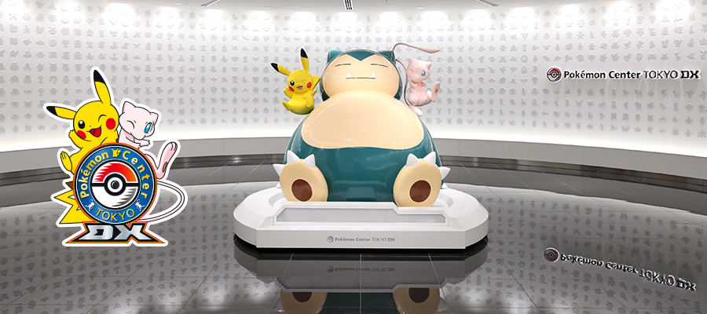
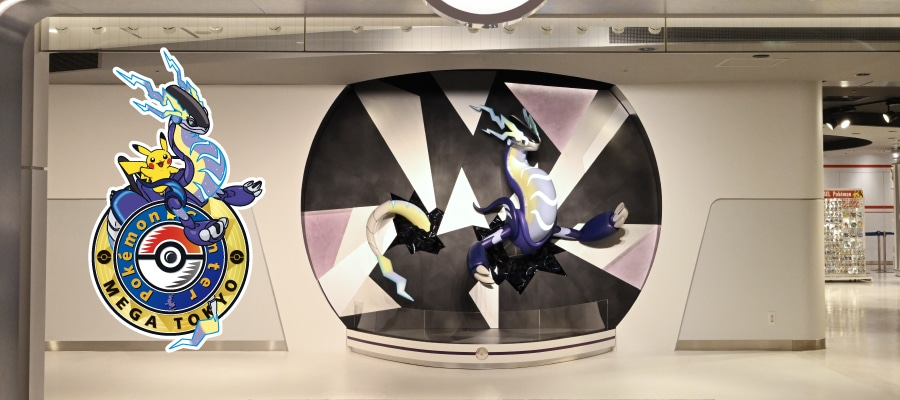
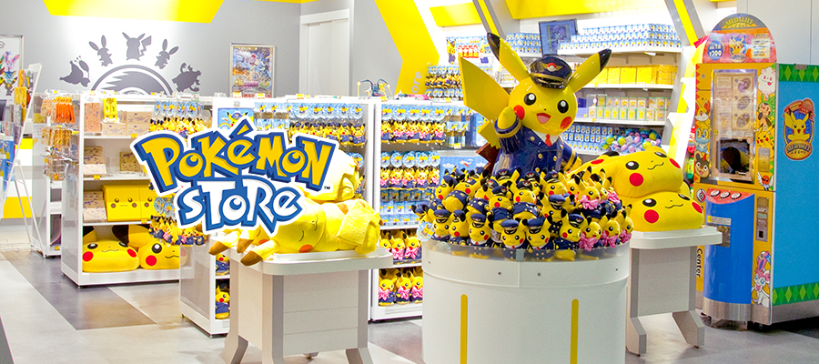
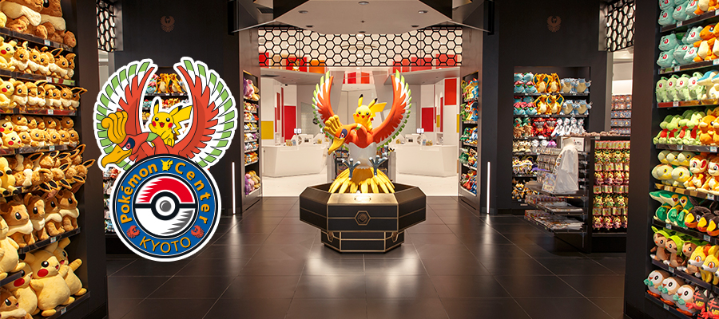
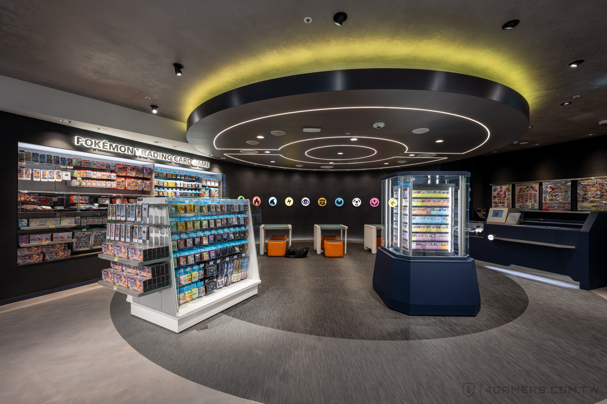
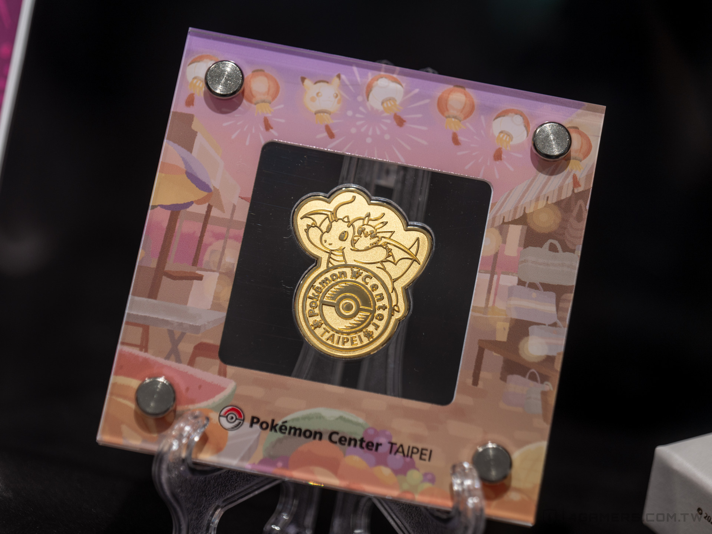

是由寶可夢公司旗下子公司寶可夢中心公司負責營運的寶可夢相關商品專賣店。店內販售品項除了周邊商品、遊戲軟體、卡牌遊戲之外，也販售了許多原創商品，並且會不定期提供各項活動及體驗。
除了實體門市外，在日本及美國還開設了寶可夢中心線上專賣店（英語：Pokémon Center Online，日語：ポケモンセンターオンライン），在中國大陸則是與阿里巴巴合作於天貓開設天貓寶可夢線上官方店。
在日本國內的部分車站及機場等設施中，還營運了規模與寶可夢中心相比較小的寶可夢商店（英語：Pokémon Store，日語：ポケモンストア）。
寶可夢中心一詞源自於寶可夢系列中能夠替寶可夢回復活力及購買相關遊戲道具的複合型設施。首家門市於1998年在東京日本橋開幕。目前在日本於東京（4間店鋪）、大阪（2間店鋪）、札幌、仙台、船橋、橫濱、金澤、名古屋、京都、廣島、福岡、沖繩等城市均設有門市 ，每間門市都有根據當地的文化或歷史而設計的專屬標誌及店內吉祥寶可夢。
在日本國內的部分車站及機場等設施中，還營運了規模與寶可夢中心相比較小的寶可夢商店（英語：Pokémon Store，日語：ポケモンストア）。
營業時間 Monday - Sunday 10:00 am - 8:00 pm
*以大丸札幌店的營業時間為準。
休息日 無公休日
地址
札幌市中央區北5条西4-7
大丸札幌店 8F
營業時間 Monday - Sunday 10:00 am - 8:30 pm
*以仙台PARCO本館營業時間為準。
休息日 無公休日
地址
宮城縣仙台市青葉區中央1-2-3
仙台PARCO 8F
營業時間 Monday - Sunday 8:00 am - 8:00 pm
*請注意，開放時間可能會視情況而改變。
休息日 無公休日
地址
北海道千歲市美々987
新千歲機場國內線航廈2樓

營業時間 Monday - Sunday 10:30 am - 9:00 pm
*Pokémon Cafe（營業時間）上午10:30 - 下午10:00
休息日 無公休日
地址
東京都中央區日本橋二丁目11番2號 日本橋高島屋Ｓ.Ｃ.東館 5F

營業時間 Monday - Sunday 10:00 am - 8:00 pm
*以太陽城專門店街alpa的營業時間為準。
休息日 無公休日
地址
東京都豐島區東池袋3-1-2
太陽城專門店街alpa 2F
營業時間 Monday - Sunday 10:00 am - 9:00 pm
*以澀谷PARCO營業時間為準。
休息日 無公休日
地址
東京都澀谷區宇田川町15番1號澀谷PARCO6樓
營業時間 Monday - Sunday 10:00 am - 9:00 pm
*以澀谷PARCO營業時間為準。
休息日 無公休日
地址
東京都澀谷區宇田川町15番1號澀谷PARCO6樓
營業時間 Monday - Friday 10:00 am - 8:00 pm, Saturday, Sunday 10:00 am - 9:00 pm
*以三井購物園區 LaLaport TOKYO-BAY的營業時間為準。
休息日 無公休日
地址
千葉縣船橋市濱町2-1-1
三井購物園區 LaLaport TOKYO-BAY 西館2F
營業時間 Monday - Sunday 10:30 am - 8:30 pm
*以丸井橫濱的營業時間為準。
休息日 無公休日
地址
橫濱市西區高島2-19-12 MARUI CITY橫濱8F
營業時間 Monday - Sunday 10:00 am - 8:30 pm
*以東京站一番街營業時間為準。
休息日 無公休日
地址
東京都千代田區丸之内1-9-1東京車站一番街1F
營業時間 週一至週日 10:00 - 20:00
*與三井奧特萊斯購物城木更津營業時間相同。
休息日 無假日
地點
三井奧特萊斯購物城 千葉縣木更津市金田東 3-1-1 木更津 2150 區

營業時間 t Monday - Sunday 8:00 am - 8:00 pm
*有關年終及新年假期的開放時間及假期，請留意 "Pokémon Center Staff Voice"。
休息日 t t無公休日
地址 t t
千葉縣成田市成田国際機場內
第二候機樓本館4樓
營業時間 Monday - Sunday 10:00 am - 9:00 pm
*以名古屋PARCO營業時間為準。
休息日 無公休日
地址
愛知縣名古屋市中區榮3丁目29番1號名古屋PARCO 東館2樓
營業時間 Monday - Sunday 10:00 am - 8:00 pm
*以金澤FORUS的營業時間為準。
休息日 無公休日
地址
石川县金泽市堀川新町3-1金泽FORUS 5F
營業時間 Monday - Sunday 10:00 am - 8:00 pm
*將依照GOTEMBA PREMIUM OUTLETS之規定營業。
休息日 年休1次，2月第3個星期四
地址
静岡縣御殿場市深澤1312
GOTEMBA PREMIUM OUTLETS內 2630區

營業時間 Monday - Sunday 10:00 am - 8:00 pm
*以京都經濟中心 SUINA室町的營業時間為準。
休息日 無公休日
地址
京都府京都市下京區四條通室町東入函谷鉾町78號京都經濟中心 SUINA室町 2F
營業時間 Monday - Sunday 10:00 am - 8:00 pm
*以大丸百貨心齋橋店本館的營業時間為準。
休息日 無公休日
地址
大阪府大阪市中央區心齋橋筋1-7-1 DAIMARU SHINSAIBASHI 本館9樓
營業時間 Monday - Sunday 10:00 am - 8:00 pm
*以大丸梅田店的營業時間為準。
休息日 無公休日
地址
大阪市北区梅田3-1-1 大丸梅田店 13F
營業時間 Monday - Sunday 10:00 am - 7:30 pm
*以SOGO廣島店的營業時間為準。
休息日 無公休日
地址
廣島縣廣島市中區基町6-27
SOGO廣島店 本館6樓
營業時間 Monday - Sunday 10:00 am - 9:00 pm
*以Emifull MASAKI的營業時間為準。
休息日 無公休日
地址
愛媛縣伊予郡松前町筒井850番 Emifull MASAKI Emi Mall 2樓
營業時間 Monday - Sunday 10:00 am - 8:00 pm
*以JR博多CITY AMU PLAZA博多的營業時間為準。 *假期基於週日營業時間。
休息日 無公休日
地址
福岡縣福岡市博多區博多車站中央街1番1號
JR博多CITY8F（AMU PLAZA博多內）
營業時間 Monday - Sunday 10:00 am - 10:00 pm
*以永旺夢樂城 沖繩 來客夢的營業時間為準。
休息日 無公休日
地址
沖繩縣中頭群北中城村字來客夢1番地
永旺夢樂城沖繩來客夢1樓
營業時間 Monday - Thursday, Sunday 11:00 am - 9:30 pm, Friday, Saturday 11:00 am - 10:00 pm
*以新光三越的營業時間為準。
休息日 無公休日
地址 新光三越台北信義新天地A11 3F (110台北市信義区松壽路11號）
營業時間 Monday - Sunday 10:00 am - 10:00 pm
*以星耀樟宜機場的營業時間為準。
休息日 無公休日
地址 新加坡樟宜國際機場內「JEWEL」4樓
78 Airport Boulevard, #04-201 & 202, Jewel Changi Airport, Singapore 819666
唯二的兩間商店一間位於新加坡的樟宜國際機場，而另一間就位於台灣。位於新光三越台北信義新天地A11 3F的台北寶可夢中心(Pokémon Center TAIPEI) 在 2023年12月8日盛大開幕。 店內的設計概念來自擁有豐饒自然環境、且被碧海藍天包圍的島嶼。快龍和皮卡丘作為吉祥物將會在入口熱情地迎接大家唷。店內除了有官方往年出版過的大大小小周邊與實體卡牌、遊戲卡帶外，也有許多台北限定商品等著大家來一探究竟。


地址：新光三越台北信義新天地A11 3F
營業時間：週日~週四 11:00~21：30
週五~週六 11：00~22：00